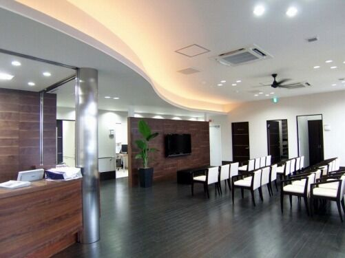
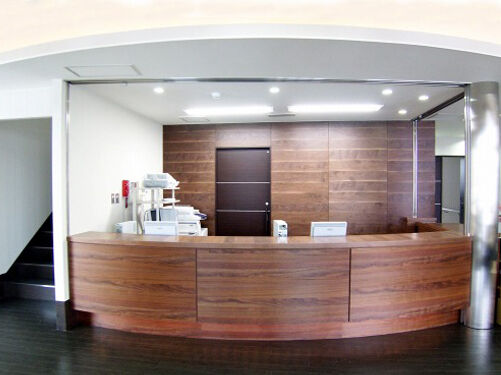
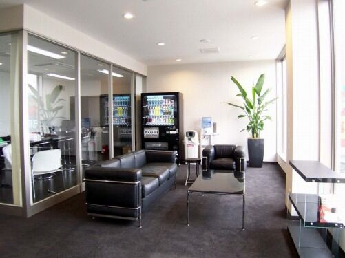
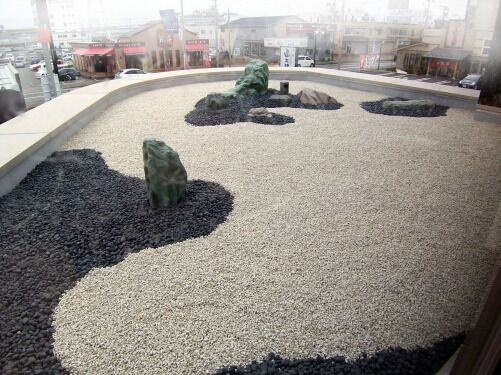
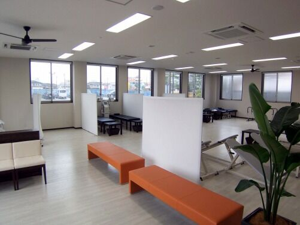

受付～待合室
内装はSHSさんのご協力で、落ち着いた雰囲気の待合室を作りました。
玄関の屋根（キャノピー）の上に、枯山水様式の庭園を作りました。
トレーニングの後の心のリラクゼーションにご覧ください。
診察室
患者さんの携帯電話で診療の予約が可能です。
超音波エコー診断装置
靭帯損傷、軟骨損傷などレントゲンでわからなかった障害を正確に診断するための装置です。
骨密度測定器
放射線を使用せず、超音波を使った体にやさしい骨密度測定器です。
リハビリ室
ウオーターベッド
ジェット水圧で全身マッサージしリラクゼーションできます。
腰椎牽引器
患者さんにはただ座っていただくだけで、牽引器自身がリクライニングして牽引姿勢になり治療します。
ストレッチベンチ
股関節から大腿後面のストレッチは意識しないとなかなかできないものですが、このベンチに座ることでストレッチできます。
伊藤超音波治療器
立体加温効果と高速度ミクロマッサージ作用で効果的に治療します。
総合刺激装置
多種，多様の電気刺激により、患者さんの痛み軽減、腫れの軽減、スポーツ後の筋肉痛の軽減、知覚神経刺激による痛みの軽減、筋力の強化などが可能です。
メドマー
空気圧によるマッサージで血液とリンパ液の効果的な流れを促進します。
干渉電流型低周波治療器
多重干渉波によるマッサージを提供します。
マイクロサーミー
マイクロ波による温熱治療器です。原理は電子レンジと一緒です。
からだの中に金属がある人は、火傷の恐れがありますので使用できません。
リハビリテーションの一環として
Reservation
休診日／木曜午後・土曜午後・日曜・祝祭日 ※受付は午前、午後とも30分前からです。